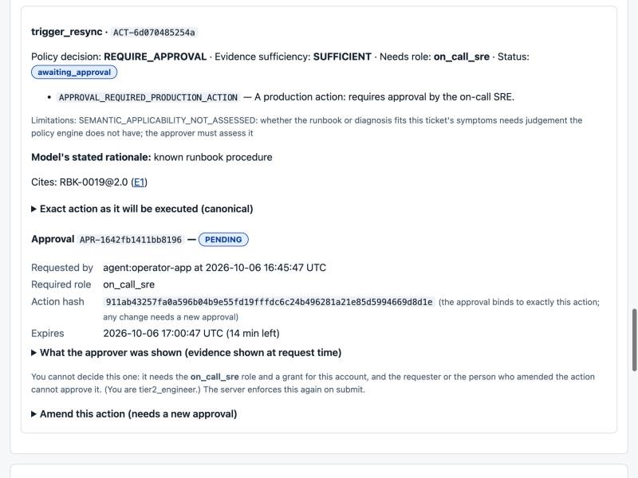

CASE STUDY / ALL SIX
Support Escalation Copilot
An approval-gated agent workflow where the model proposes and deterministic code decides, with an audit trail and tenant isolation.
- Commit tested
1d69a02- Stack
- Python 3.12 · PostgreSQL + pgvector (row-level security) · server-rendered operator UI · pytest
01 / THE PROBLEM
Why it exists
An agent is useful for reading and reconciling messy evidence, and dangerous where the work is deciding who may do what. The question was how to let a model help with a support escalation while the things that can hurt a customer stay under deterministic control and human approval.
02 / ARCHITECTURE
How it fits together
Choose a step to highlight the parts involved. Drawn from the project's own documentation; the list below the diagram carries the same information as text.
- deterministic code
- model / untrusted
- data store
- person
The model works inside steps; it does not plan the workflow, choose the tenant, the approver or the workflow state.
Model output must pass schema, citation and grounding checks; a privileged field makes it invalid.
Deterministic rules over trusted facts decide whether an action is allowed.
Approvals bind to the action, role, tenant and expiry; amending the action requires a new approval.
If an external write may or may not have happened, the case is marked uncertain, not retried, and reconciled by a person.
Text version of the architecture
- The workflow is fixed. The model works inside steps; it does not plan the workflow, choose the tenant, the approver or the workflow state.
- Proposals are checked. Model output must pass schema, citation and grounding checks; a privileged field makes it invalid.
- Policy decides, not the model. Deterministic rules over trusted facts decide whether an action is allowed.
- Humans approve the exact action. Approvals bind to the action, role, tenant and expiry; amending the action requires a new approval.
- Uncertain outcomes are handed off. If an external write may or may not have happened, the case is marked uncertain, not retried, and reconciled by a person.
03 / IMPLEMENTATION
What was built
- Five typed actions (two propose-only, three human-gated); a vocabulary the model cannot extend.
- PostgreSQL row-level security for tenant isolation; uniform 404 for foreign cases.
- Idempotent execution, crash recovery with leases, and a hash-chained audit log that is verified in the demo.
04 / ENGINEERING DECISIONS
Choices and trade-offs
- Fixed workflow, not free-form planning. Predictable and testable; the model contributes reading and drafting, not control.
- Deterministic policy engine. No model confidence or retrieval score is an input to an authorisation decision.
- Do not retry uncertain writes. An unknown outcome is handed to a person instead of risking a duplicate.
05 / VERIFICATION
What I actually ran
Run on 2026-11-01 in clean scratch environments. Offline tests on synthetic or bundled data show the code behaves as tested; they do not show production readiness.
| pytest with embedded Postgres (runtime installed from its pinned commit) | 489 passed, 1 xfailed (the repository's documented gap) |
|---|---|
| scripts/demo_smoke.py | 21/21 demo checks passed, including: prompt-injection contained · uncertain execution handed off, not retried · another tenant gets the same 404 for a real and a nonexistent case · audit trail verifies (hash chain) |

06 / RUN IT
Run it yourself
Copied from the project's own documentation (README.md, Short demo and Local setup, at commit 1d69a02). Python 3.11+, git and network for pip; no Docker, API key or paid service. Results are only those in the verification table above; running these on your machine may differ.
git clone https://github.com/riteshmamidi0905-lab/support-escalation-copilot.git && cd support-escalation-copilot
python -m venv .venv && . .venv/bin/activate && make setup
make demo # operator UI at http://127.0.0.1:8765/login (embedded PostgreSQL, no Docker)
make demo-smoke # demos A-F over HTTP, 21 checks07 / LIMITATIONS
What this does not show
- The default model is a rule-based stand-in, not an LLM; the repository reports one small real-model evaluation separately.
- The scenario is a fictional B2B SaaS support team on synthetic data.
- The tests require the pinned agent runtime from another repository (ai-agent-from-scratch).
08 / BUSINESS RELEVANCE
Where it matters
Support, finance and operations escalations where an assistant may draft and recommend but a person must authorise anything that changes a customer's account.